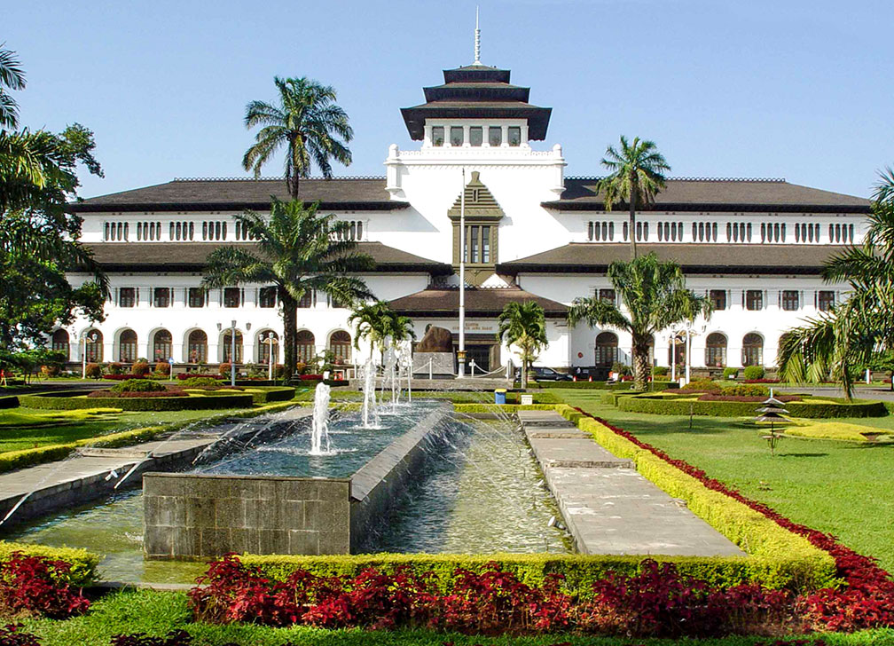
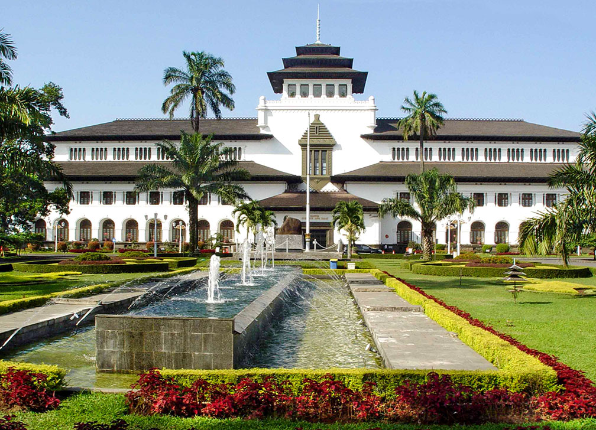

Kawah Putih adalah salah satu destinasi wisata yang menakjubkan di Bandung, terkenal dengan danau berwarna putih yang dikelilingi oleh pepohonan hijau. Terletak di daerah pegunungan, Kawah Putih menawarkan pemandangan yang spektakuler dan suasana yang sejuk.
Di Kawah Putih, pengunjung dapat menikmati keindahan alam sambil berjalan-jalan di sekitar danau, berfoto dengan latar belakang yang menakjubkan, dan merasakan udara segar pegunungan. Kawah Putih juga dikenal dengan aktivitas vulkaniknya, di mana Anda dapat melihat fenomena alam yang unik. Tempat ini adalah pilihan yang sempurna untuk merasakan keindahan alam dan ketenangan di tengah kesibukan kota.